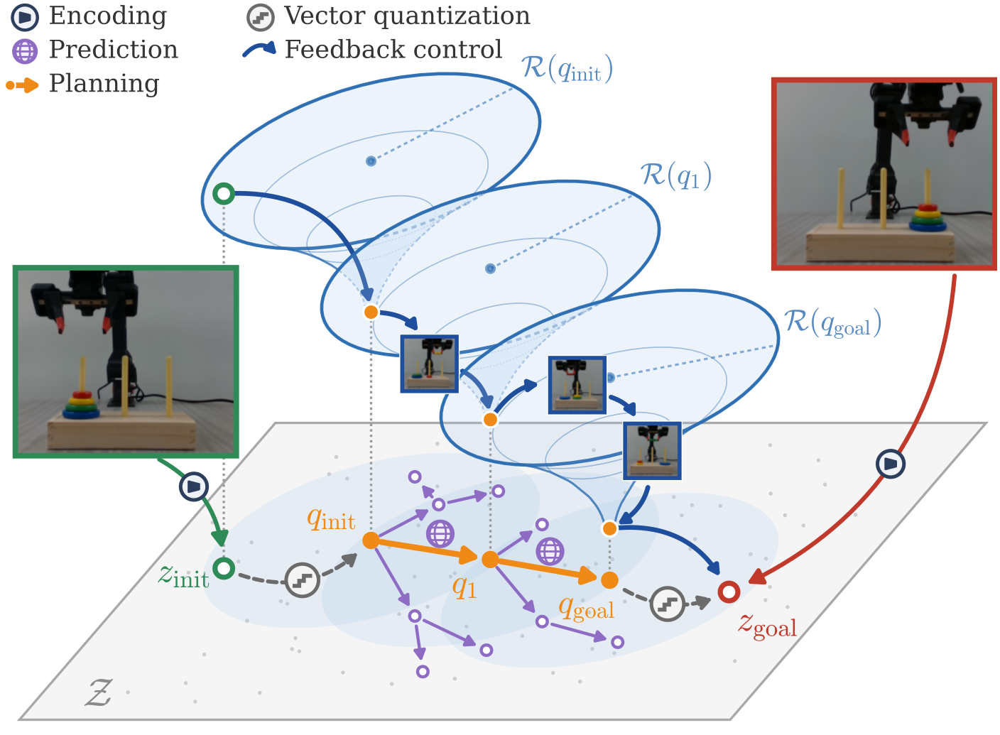
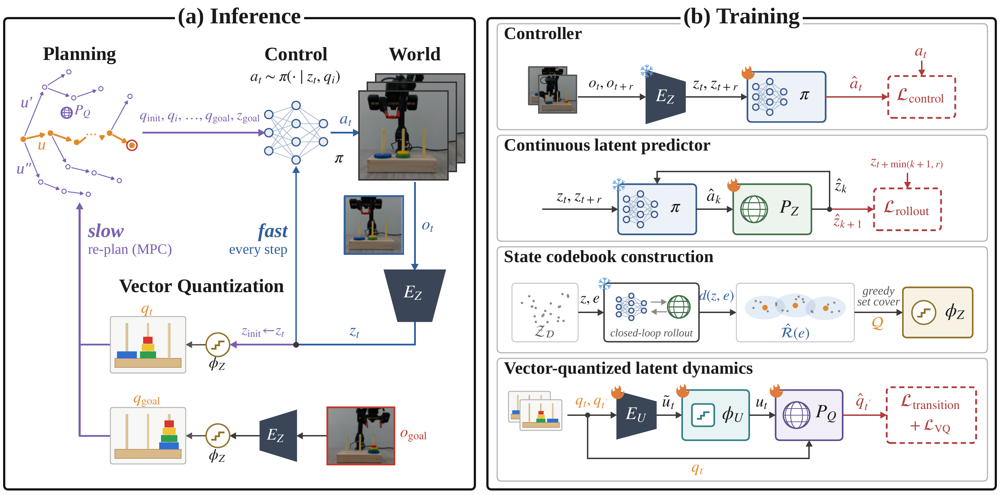
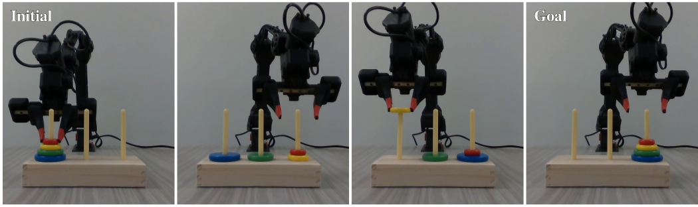
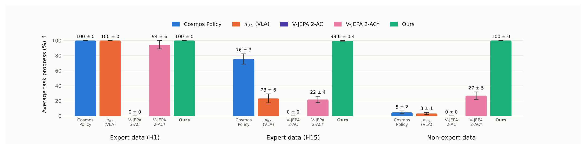

Real-robot Tower of Hanoi
100%task progress, 15 moves, play data only
In submission
Vector-Quantized World Model:
Latent Feedback Motion Planning for Robot Manipulation
1New York University · 2NVIDIA
*Equal contribution
Visual world models have shown strong potential for robot planning, yet long-horizon manipulation remains challenging: prediction errors compound over autoregressive rollouts, search complexity grows with the horizon, and planners propose latent targets that the low-level controller cannot reliably reach. We introduce VQ-WM, a latent feedback motion planning framework that vector-quantizes the latent space by controller reachability, measured as first-passage time, so a discrete planner can search far ahead over reachable states while a continuous controller tracks each planned state with visual feedback.

100%task progress, 15 moves, play data only
75.3%success on Scene, the longest task
97.3%success rate, images + proprioception
Method

Breadth-first search over vector-quantized states with the discrete predictor PQ returns the shortest path over vector-quantized states from qinit to qgoal. One call plans about five minutes of robot execution in under a second.
A goal-conditioned controller π(· | zt, qi) tracks each planned vector-quantized state every step from visual feedback, for the number of calls the first-passage-time estimate assigns to that transition.
First-passage time d(z, z′): the number of controller calls until a closed-loop rollout of π in the learned latent model first reaches z′. It replaces Euclidean distance for building the codebook and assigning states, so every vector-quantized state is a target the controller can actually reach.
Goal-conditioned, trained on state–goal pairs up to R steps apart with an L1 action loss.
Supervised on closed-loop rollouts with π, the same procedure used to estimate first-passage time.
Greedy set cover over estimated regions of attraction; each latent state is assigned to the vector-quantized state it reaches in the fewest controller calls.
Latent action encoder, action codebook and discrete latent predictor learned jointly from vector-quantized transitions with cross-entropy and VQ losses.
Simulation
The margin over the strongest baseline grows with the task horizon.
| Method | Cube-Easy | Cube-Hard | Scene |
|---|---|---|---|
| LeWM | 74.0 ± 2.8 | 32.0 ± 6.1 | 42.7 ± 1.9 |
| TS | 68.0 ± 2.8 | 10.7 ± 0.9 | 47.3 ± 2.5 |
| PLDM | 62.0 ± 4.3 | 11.3 ± 3.8 | 44.7 ± 4.1 |
| H-JEPA | 76.7 ± 2.5 | 60.0 ± 5.0 | 40.7 ± 2.5 |
| VQ-WM (ours) | 84.7 ± 2.5 | 73.3 ± 0.9 | 75.3 ± 5.0 |
Proprioception improves the controller; the codebook adapts; the planner is untouched.
| Method | Images | Images + proprio. |
|---|---|---|
| DINO-WM | 12.7 ± 3.4 | 12.0 ± 4.9 |
| VQ-WM (ours) | 22.0 ± 5.9 | 97.3 ± 2.5 |
Real World


Ablation
Simulated Tower of Hanoi, same encoder, controller and training; only the quantization metric changes.
Citation
@misc{xu2026vqwm,
title = {Vector-Quantized World Model: Latent Feedback Motion Planning for Robot Manipulation},
author = {Xu, Xuezhou and Wang, Chung-Pang and Li, Zhenzhen and Riviere, Benjamin},
year = {2026},
eprint = {2610.25600},
archivePrefix = {arXiv},
primaryClass = {cs.RO},
url = {https://arxiv.org/abs/2610.25600}
}